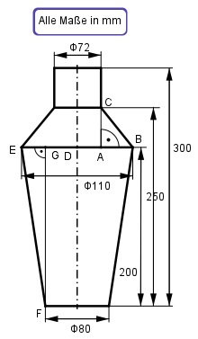

Aufgabe 280 Wie viel cm2 Blech braucht man für die Herstellung des Kruges, wenn man für die Nahtstellen mit 5% Zuschlag rechnen muss?

A = 1,05 * (Kegelmantel K1 + Kegelmantel K2 + + Zylindermantel Z + Kreis K) K1 = л * BC * (r1 + r2) Satz von Pythagoras im Dreieck ABC: DB = 110 mm/2 = 55 mm = r1 DA = 72 mm/2 = 36 mm = r2 AB = DB - DA = 55 mm - 36 mm = 19 mm AC = 250 mm - 200 mm = 50 mm BC2 = AB2 + AC2 = = 192 mm2 + 502 mm2 = 361 mm2 + 2 500 mm2 BC2 = 2 861 mm2 |√ BC = 53,5 mm K1 = л * 53,5 mm * (55 mm + 36 mm) = = 15 287 mm2 = 152,9 cm2 K2 = л * EF * (r1 + r3) Satz von Pythagoras im Dreieck EFG: DE = 110 mm/2 = 55 m = r1 DG = 80 mm/2 = 40 mm = r3 EG = DE -DG = 55 mm - 40 mm = 15 mm FG = 200 mm EF2 = FG2 + EG2 = 2002 mm2 + 152 mm2 = = 40 000 mm2 + 225 mm2 EF2 = 40 225 mm2 |√ EF = 200,56 mm K2 = л * 200,56 mm * (55 mm + 40 mm) = = 59 827 mm2 = 598,3 cm2 Z = 2 * л * r2 * 50 mm = = 2 * л * 36 mm * 50 mm = 11 304 cm2 Z = 113 cm2 K = л * r32 = л * 402 mm2 = 5 024 mm2 = 50,2 cm2 A = 1,05 * (152,9 cm2 + 598,3 cm2 + 113 cm2 + + 50,2 cm2) = A = 960,1 cm2